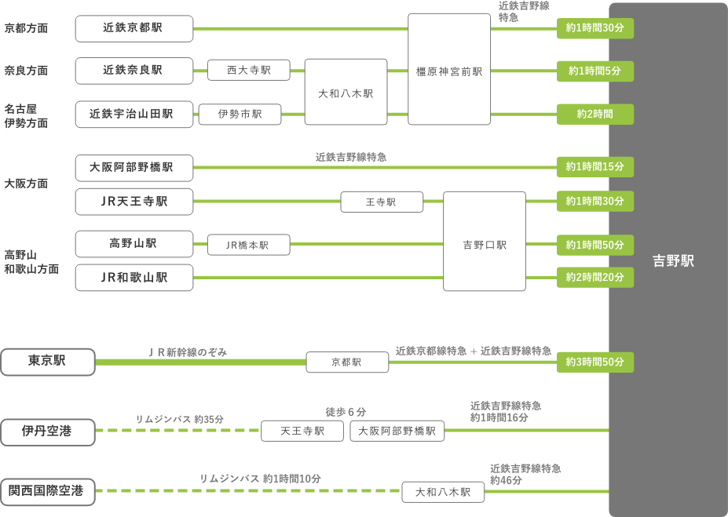
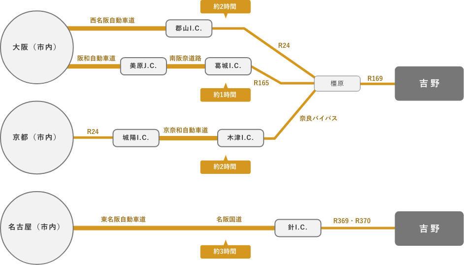
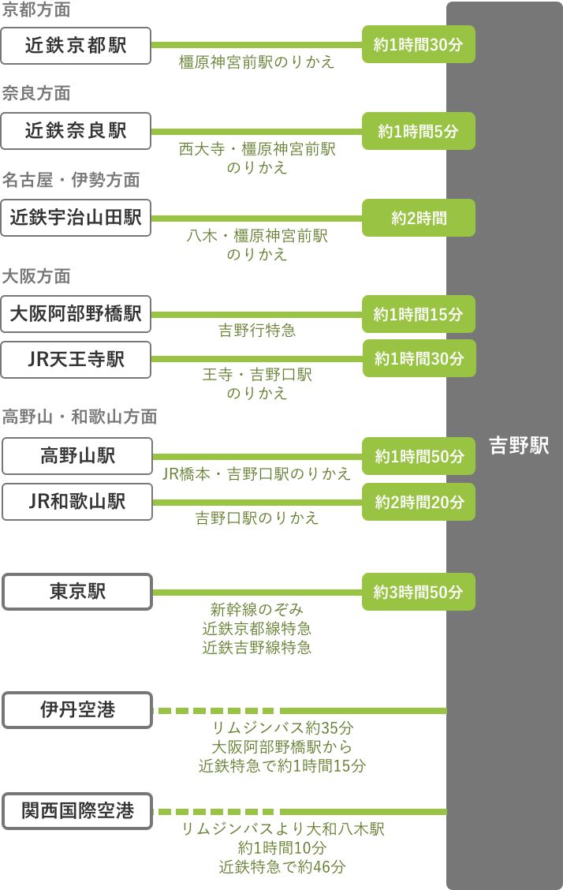
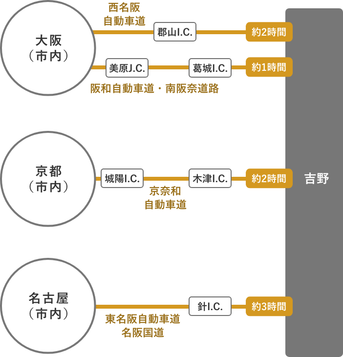
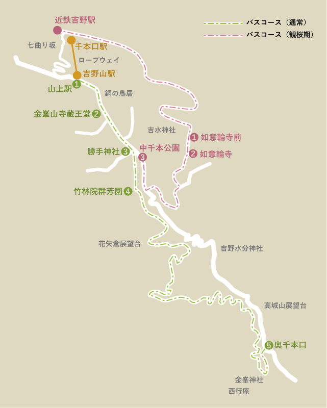
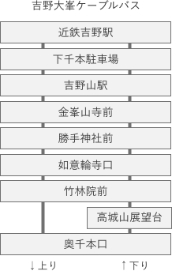

吉野までのアクセス
- 公共交通機関でのアクセス
- 車でのアクセス
- 
- 
- 公共交通機関でのアクセス
- 車でのアクセス
- 
- 
吉野でのアクセス
バスのご案内

通常運行期
桜の開花時期においても通常通り運行しております。
観桜期
桜の季節のみ、近鉄吉野駅から如意輪寺を経由し中千本公園まで奈良交通臨時バスが運行しています。

バス時刻表［通常期］
吉野山駅発 上り
| 時 | 8 | 9 | 10 | 11 | 12 | 13 | 14 | 15 | |
|---|---|---|---|---|---|---|---|---|---|
| 分 | 吉野神宮 | - | 35 | 35 | 35 | - | 35 | 35 | 35 |
| 下千本駐車場 | - | 46 | 46 | 46 | - | 46 | 46 | 46 | |
| 吉野山駅 | 48 | 48 | 48 | 48 | - | 48 | 48 | 48 | |
| 金峯山寺前 | 50 | 50 | 50 | 50 | - | 50 | 50 | 50 | |
| 勝手神社前 | 53 | 53 | 53 | 53 | - | 53 | 53 | 53 | |
| 如意輪寺口 | 54 | 54 | 54 | 54 | - | 54 | 54 | 54 | |
| 竹林院前 | 55 | 55 | 55 | 55 | - | 55 | 55 | ▲55 | |
| 奥千本口 | 8 | 8 | 8 | 8 | - | 8 | 8 | - |
平成29年6月1日改定
▲印は停留所止まり
奥千本口発 下り
| 時 | 8 | 9 | 10 | 11 | 12 | 13 | 14 | 15 | 15 | 16 | |
|---|---|---|---|---|---|---|---|---|---|---|---|
| 分 | |||||||||||
| 奥千本口 | - | 8 | 8 | 8 | 8 | - | 8 | 8 | - | - | |
| 高城山展望台 | - | 11 | 11 | 11 | 11 | - | 11 | 11 | - | - | |
| 竹林院前 | - | 23 | 23 | 23 | ▲23 | 23 | 23 | 23 | 58 | - | |
| 如意輪寺口 | - | 24 | 24 | 24 | - | 24 | 24 | 24 | 59 | - | |
| 勝手神社前 | - | 25 | 25 | 25 | - | 25 | 25 | 25 | - | 0 | |
| 金峯山寺前 | - | 28 | 28 | 28 | - | 28 | 28 | 28 | - | 3 | |
| 吉野山駅 | - | 31 | 31 | 31 | - | 31 | 31 | 31 | - | ▲5 | |
| 下千本駐車場 | - | 33 | 33 | 33 | - | 33 | 33 | 33 | - | - | |
| 吉野神宮 | - | 35 | 35 | 35 | - | 35 | 35 | 35 | - | - |
平成29年6月1日改定
▲印は停留所止まり
バス時刻表［観桜期］
4.1～4.21 竹林院前〜奥千本口のみの運行です
| 時 | 8 | 9 | 10 | 11 | 12 | 13 | 14 | 15 | 16 | |
|---|---|---|---|---|---|---|---|---|---|---|
| 分 | 竹林院前 | - | 0 | 0 | 0 | 0 | 0 | 0 | - | - |
| 30 | 30 | 30 | 30 | 30 | 30 | 30 | - | - | ||
| 奥千本口 | - | 0 | 0 | 0 | 0 | 0 | 0 | 0 | 0 | |
| - | 30 | 30 | 30 | 30 | 30 | 30 | 30 | ※30 |
※印は4.6（土）・7（日）・13（土）・14（日）のみ運行
4.22～5.6 竹林院前〜奥千本口のみの運行です（※高城山展望台停留所は止まりません）
| 時 | 8 | 9 | 10 | 11 | 12 | 13 | 14 | 15 | 16 | |
|---|---|---|---|---|---|---|---|---|---|---|
| 分 | 竹林院前 | - | 0 | 0 | 0 | 0 | 0 | 0 | - | - |
| 30 | ※30 | ※30 | ※30 | ※30 | ※30 | ※30 | - | - | ||
| 奥千本口 | - | ※0 | ※0 | ※0 | ※0 | ※0 | ※0 | ※0 | - | |
| - | 30 | 30 | 30 | 30 | 30 | 30 | 30 | - |
※印は土、日祝日のみ運行
バス運賃
通常期：一般170~550円、小人90~280円
観桜期：一般400円、小人200円（竹林院前〜奥千本口）
吉野山の行事・渋滞などで到着時刻が前後する場合があります。
吉野山の行事・車の渋滞等で時刻が前後する場合があります。
毎年12月中旬から3月中旬まで冬期運休致します。
「身体障がい者手帳」・「療育手帳」・「精神障がい者保健福祉手帳」をお持ちの方は、単独又はご本人様と介護者(1名まで)が同乗の時それぞれ5割引となります。切符をご購入の際は必ず各種手帳のご提示をお願いいたします。ご提示のない場合は割引の適用ができませんので、ご了承くださいませ。
吉野でのアクセス
ロープウェイのご案内
ロープウェイ時刻表［通常期］
千本口〜吉野山（山上駅）
| 時 | 9 | 10 | 11 | 12 | 13 | 14 | 15 | 16 | 17 |
|---|---|---|---|---|---|---|---|---|---|
| 分 | 5 | 5 | 5 | 5 | 5 | 5 | 5 | 5 | |
| 20 | 20 | 20 | 20 | 20 | 20 | 20 | 20 | 20 | |
| 35 | 35 | 35 | 35 | 35 | 35 | 35 | 35 | ||
| 50 | 50 | 50 | 50 | 50 | 50 | 50 | 50 |
吉野山内でのイベント開催に伴う運行時刻の変更もあります。
ロープウェイ時刻表［観桜期］
2020.4.5～4.16 千本口〜吉野山（山上駅）
| 時 | 7 | 8 | 9 | 10 | 11 | 12 | 13 | 14 | 15 | 16 | 17 | 18 | 19 |
|---|---|---|---|---|---|---|---|---|---|---|---|---|---|
| 分 | - | 0 | 5 | 5 | 5 | 5 | 5 | 5 | 5 | 5 | 5 | 10 | ※10 |
| - | 20 | 20 | 20 | 20 | 20 | 20 | 20 | 20 | 20 | 20 | ※20 | - | |
| 40 | 35 | 35 | 35 | 35 | 35 | 35 | 35 | 35 | 35 | 35 | ※35 | - | |
| - | 50 | 50 | 50 | 50 | 50 | 50 | 50 | 50 | 50 | 50 | ※50 | - |
※印は4.6（土）・7（日）・13（土）・14（日）のみ運行
2020.3.30～4.4 2020.4.17～5.6 千本口〜吉野山（山上駅）
| 時 | 7 | 8 | 9 | 10 | 11 | 12 | 13 | 14 | 15 | 16 | 17 |
|---|---|---|---|---|---|---|---|---|---|---|---|
| 分 | - | - | 5 | 5 | 5 | 5 | 5 | 5 | 5 | 5 | 5 |
| - | 20 | 20 | 20 | 20 | 20 | 20 | 20 | 20 | 20 | 20 | |
| - | 40 | 35 | 35 | 35 | 35 | 35 | 35 | 35 | 35 | - | |
| - | - | 50 | 50 | 50 | 50 | 50 | 50 | 50 | 50 | - |
2020.3.23～は通常期の時刻表となります。
ロープウェイ運賃
大人：片道450円 往復800円
小人：片道230円 往復400円
小人は、大人の半額料金です。端数は、四捨五入です。観桜期は往復券の販売はございません。小人は４才～小学生まで
「身体障がい者手帳」・「療育手帳」・「精神障がい者保健福祉手帳」をお持ちの方は、単独又はご本人様と介護者(1名まで)が同乗の時それぞれ5割引となります。切符をご購入の際は必ず各種手帳のご提示をお願い致します。ご提示のない場合は割引の適用ができませんので、ご了承くださいませ。